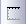

FAQ-959 Wie kann ich für die X-Achse zwei unterschiedliche Gruppen von Hilfsstrichsbeschriftungen anzeigen?
Two-groups-X-tick-labels
Letztes Update: 06.01.2019
Um eine weitere Gruppe von Hilfsstrichsbeschriftungen für X unabhängig von der existierenden X-Achse hinzuzufügen,
- fügen Sie bei aktiviertem Diagrammfenster einen Layer nur mit oberer X-Achse hinzu, indem Sie auf Layer mit oberer X-Achse hinzufügen  klicken oder wählen Sie Einfügen: Neuer Layer (Achsen): Obere X (Verknüpfte Y-Skala und Dimension) aus.
- Verschieben Sie die obere X-Achse nach unten in die Position der unteren X-Achse, um diese zwei Achsen genau aufeinander zu legen.
- Klicken Sie doppelt auf die Hilfsstrichsbeschriftungen der X-Achse der neu hinzugefügten Layer, um die Hilfsstrichsbeschriftungen nach Wunsch benutzerdefiniert anzupassen.
Beachten Sie, dass diese zwei X-Achsen nicht miteinander verknüpft sind.
Weitere Einzelheiten zu doppelten X-Achsen finden Sie auf diesem Blog.
Schlüsselwörter:zwei Beschriftungen der X-Achse, doppeltes X, weitere Hilfsstrichsbeschriftung